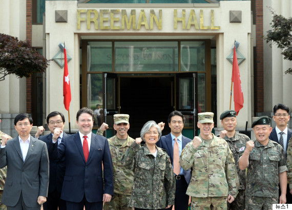
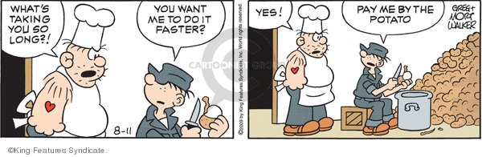
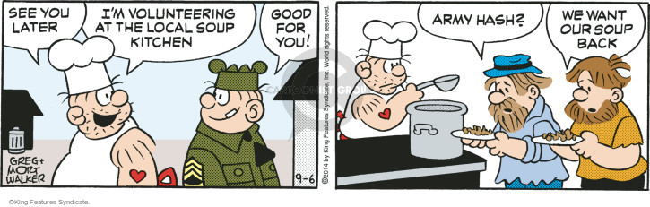
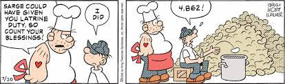
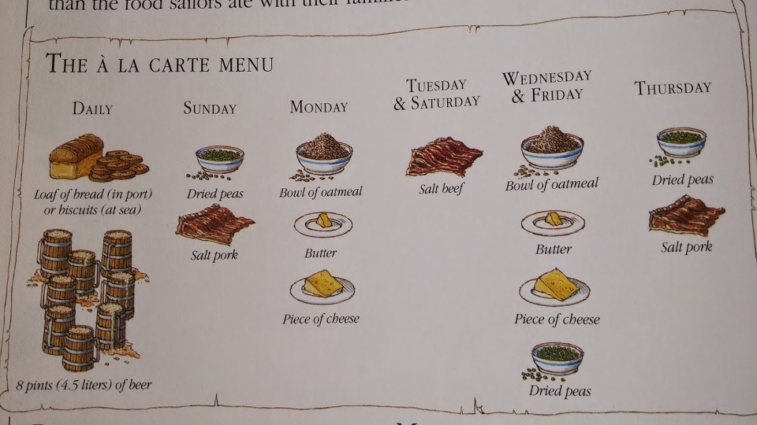
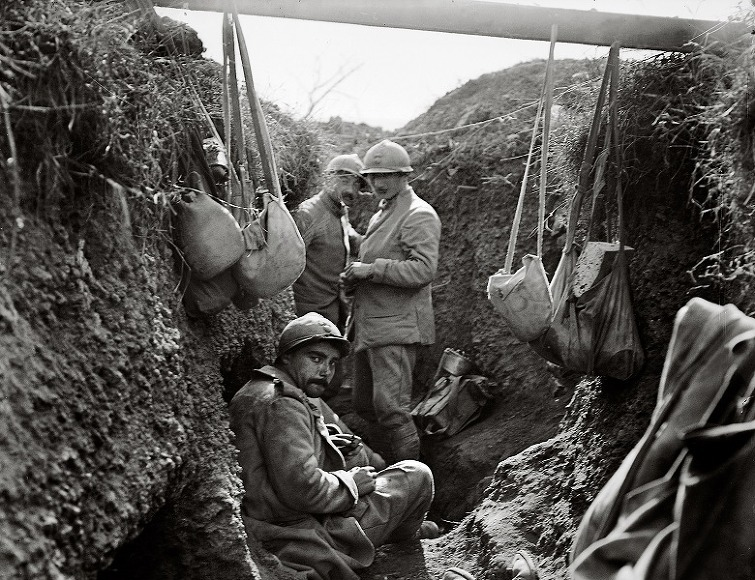
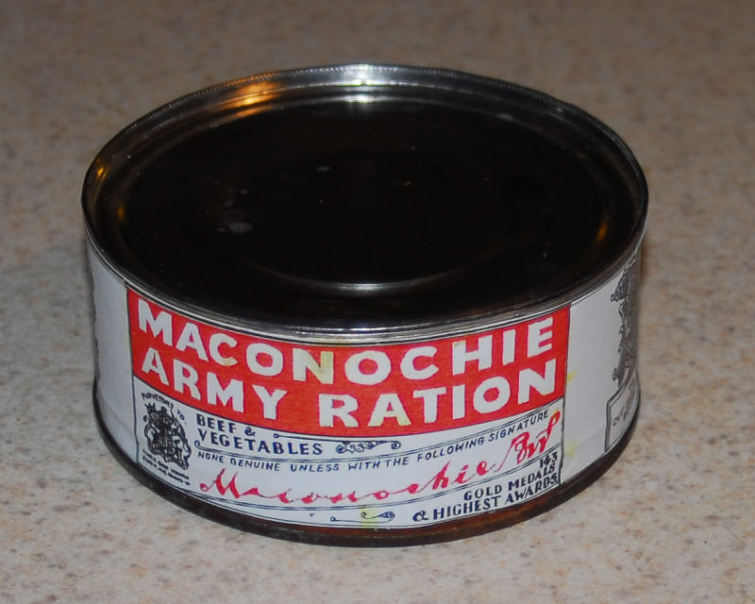
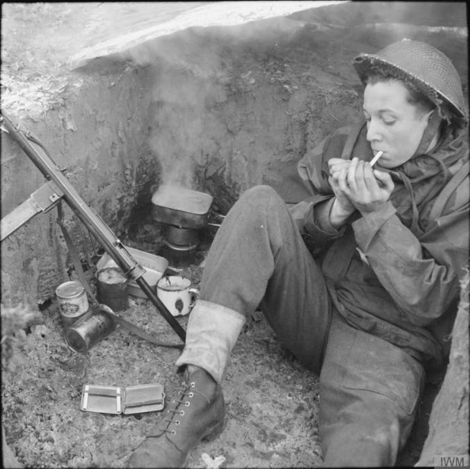
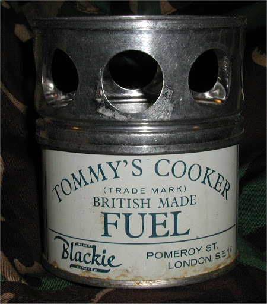

나폴레옹과 비스마르크의 군대에는 취사병이 없었다
게시: 2018-08-09T06:30:00+09:00
** 이번 목요일은 'PX병과 취사병을 없앤다'라는 군 개혁안을 기념하여 올리는 재탕글입니다.
제가 카투사로 군 생활을 했던 미군 부대에는 식당(mess hall)이 2개 있었습니다. 그 중 하나는 미군 애들 중 취사가 주특기인 애들이 요리도 하고 식당 관리도 했습니다만, 다른 하나에서는 한국인 아저씨들이 미국인 민간 군속 아저씨의 관리 하에 그런 주방일을 했습니다. 즉, 식당이 거의 민영화되어 있더라고요.
카투사에 가게 되면 미군에서만 사용하는 희한한 용어들을 몇개 배우게 되는데, 그 중 kitchen police라는 말이 있습니다. 이게 주방을 감시하는 경찰이라는 뜻이 아니라, 주방에서 (요리 외에) 하는 청소 및 설거지 같은 잡역을 말하는 단어입니다. Police up 이라는 단어는 동사로서 뭔가를 청소하다 라는 뜻이 있거든요. 미군의 역사를 보면 예전에는 뭔가 가벼운 죄를 저지른 병사들에게 처벌로 이런 kitchen police를 시켰습니다. 감자껍질 깎기나 바닥 청소 뭐 그런 것들이지요.

(정확한 워딩은 기억이 안 나는데, 2017년 6월 25일 일요일에 강경화 장관이 미 제2사단을 찾아 성명을 발표하며, '내가 이렇게 주말에 방문하는 바람에 미군 병사들이 니들 말로 'police up'을 해야 하는 등 내가 민폐를 끼쳤을 거다, 그래도 한미 연합의 중요성은...' 라는 말을 하는 것을 보았습니다. 아마 한국 외교부 장관이 'police up'이라는 용어를 쓰는 것을 보고 미군들도 웃었을 것 같습니다. 외교에서 해당 외국어를 잘 아는 것은 정말 중요합니다.)
원래 미군은 주방에서 일하는 것을 약간 천하게 여기는 모양입니다. 한국군에서는 취사병을 천하다고 생각하는 것 같지는 않습니다만, 미군은 취사특기병을 뭐 그렇게 높게 평가하는 것 같지 않습니다. 그래서 처벌로 일반 전투병을 주방 허드렛일을 시키기도 하는 것이고, 또 카투사 초창기에는 카투사를 주로 취사병으로 활용했다고 합니다. 영화 진주만을 보더라도 흑인인 쿠바 구딩 주니어는 전함에서 멸시받는 주방일을 하면서, 백인 병사들의 존중을 끌어내기 위해 권투를 하는 것으로 나오지요. 한국 전쟁 때만 하더라도 미군은 백인 부대 속에 흑인을 따로 집어 넣지 않았고, 2차 세계대전 때에는 아예 유색 인종에게는 전투 임무를 주지 않았습니다. 열등한 유색 인종을 믿을 수 없다는 의미도 있고 또 흑인들에게 무장 훈련을 시키는 것이 바람직하지 않다는 속셈도 있었지요.



(Beetle Bailey라고, 미군 신문인 Stars & Stripes에 연재되던 군대 코미디 만화입니다. 지금도 연재되지는 않겠지요. 보시다시피 베일리 이병은 주로 주방에서 감자 껍질 벗기는 벌을 자주 받습니다.)
이렇게 천대 받는 취사병은 그다지 오랜 역사를 가진 병과가 아닌 것이 확실합니다. 왜냐하면 불과 제1차 세계대전 초창기만 하더라도 취사병이라는 병과가 없었다고 합니다. 군대에서의 모든 식사는 그냥 중대 단위로 알아서들 해먹는 것이 상식이었고, 군 지휘부에서는 오직 식재료와 취사도구의 배급만 책임졌을 뿐이었습니다. 그래서 미국 독립 전쟁 때나 나폴레옹 전쟁 때나, 심지어 제1차 세계대전 때까지도 군 병력에 대한 식량 보급은 항상 다음과 같이 쇠고기 몇 파운드, 밀가루 몇 파운드 등 재료에 대해서만 기록될 뿐, 점심은 빵과 로스트 비프, 저녁은 파스타와 치킨 등 요리 이름은 전혀 나오지 않았습니다.
아래는 1776년 미국 독립 전쟁 중에 펜실바니아 의회에서 병력을 동원하면서 그 병력들에게 지급할 식량 목록을 규정한 내용입니다. 원래 당시에도 미국이 유럽보다 식량 형편이 좋은 것으로 유명했습니다만, 현대적 기준으로 보기에도 무척 푸짐해 보입니다.
1인당 정량
. 하루 쇠고기 1파운드, 또는 돼지고기 3/4파운드, 또는 염장 생선 1파운드
. 하루 빵 1파운드 또는 밀가루 1파운드
. 일주일에 완두 또는 콩 3파인트, 또는 그에 상응하는 채소 1부셸 당 1달러
. 하루 우유 1파인트, 또는 그에 상응하는 1/72 달러
. 일주일에 쌀 1/2파인트, 또는 옥수수 가루 1파인트,
. 하루 스프루스 비어 (spruce beer, 가문비나무의 수액을 발효시켜 만든 술) 1 쿼트 또는 사과주 1 쿼트
(다른 주의 메뉴를 보면 몰트 비어가 들어가기도 하고 버터가 1주일에 6온스씩 들어가기도 합니다.)

(사진은 영국 해군의 요일별 배식 품목입니다. 맥주를 매일 4.5리터나 !!)
이런 배급과 요리 등은 중대 혹은 대대 단위로 이루어졌고, 그 안에서 병사들이 순번을 정해 요리를 했습니다. 이렇게 순번을 정해 식사를 준비하는 것은 '귀찮은 의무'였으므로, 나중에 이 일만 전문적으로 하는 취사병이라는 병과가 생겼을 때 병사들이 취사병을 어떤 시선으로 봤을지는 뻔합니다. 아마도 그런 역사 때문에 미군을 포함한 유럽 문화권의 군대에서는 취사병을 불명예스러운 병과로 취급했나 봅니다.
이렇게 배급된 날재료로 병사들은 어떤 음식을 만들어 먹었을까요 ? 그야 말로 제각각이었습니다. 병사들에게 좋은 오븐이나 화력 좋은 가스 레인지가 주어지는 것은 아니었으므로, 이들은 주로 남비에 끓여 먹는 요리를 할 수 밖에 없었습니다. 오븐 없이 병영에서 빵을 구워 먹을 수는 없었으므로, 대대에서 일괄적으로 구워서 배급되는 빵이 없다면 이들은 배급된 밀가루를 이용해 밀가루 죽을 쑤어 먹거나 요령껏 마련한 돌판이나 철판에서 얇은 전병을 구워 먹어야 했습니다. 그리고 이런 가족적이지만 아마추어적인 배식 제도는 로마 군단 시절부터 무려 제1차 세계대전 초기까지 아무 문제 없이 잘 이어져 내려왔습니다.
그러다 제1차 세계대전이 터지자 이런 배식 제도는 심각한 도전에 직면하게 됩니다. 그 도전이란 바로 기나긴 참호전이었습니다. 1914년 마른 (Marne) 강 전투 이후 기관총과 대포를 피해 프랑스군과 독일군 양측이 깊고 체계적인 참호를 파고 참호전에 들어가게 되자, 당장 병사들에게 배식을 어떻게 할 것인가에 대한 문제가 생겨났습니다.
양측 수뇌부 모두에게 있어, 전투란 보병의 전열이 전진하고 기병이 그 틈새를 파고들어 돌격하는 그런 장엄한 것이었지, 이렇게 수많은 병사들이 물구덩이나 다름 없는 참호 속에서 두더쥐처럼 웅크리고 수주 동안을 버티는 것이라고는 전혀 상상하지 못했습니다. 전투가 끝나고 후방으로 물러나 여유있게 넓은 공간에서 장작을 패고 물을 끓여 식사를 준비하는 것이 완전히 불가능해진 것입니다.

(이렇게 상하수도 시설도 없고 좁은데다 위험하기까지 한 곳에서 밥까지 해먹으라는 것은 무리지요.)
고대 로마군 시절부터 병사들을 따라다녔던 지겨운 건빵(biscuit, hardtack)은 참호전에서도 유용한 지겨운 식량이었습니다. 다행히 이때 즈음에는 나폴레옹 시대에 첫선을 보인 통조림이 보편적으로 유통되던 시절이라 참호 속에서 차가운 통조림을 뜯어먹도록 하는 방안도 있었으나, 아무래도 통조림을 그렇게 대량으로 생산 공급하는 것도 어려웠고, 또 먹을 것이 곧 사기로 이어지는 암울한 전장에서 맛대가리 없는 차가운 통조림만으로 하루 세끼를 때우도록 하는 것은 문제가 있었습니다.
가령 제1차 세계대전 당시 영국군의 대표적 군용 식량으로 알려진 Maconochie(머카너키)는 묽은 고기 수프에 감자, 순무와 당근이 둥둥 떠있는 통조림 스튜였는데, 이걸 먹어본 병사들은 이런 소감을 남겼습니다.
"따뜻할 때 먹으면 Maconochie도 먹을만 하지만, 차가운 채로 먹으면 man-killer다."

(숙명의 머카너키 깡통입니다.)
결국 양측 수뇌부는 일반 전투병들이 순번제로 자신들이 먹을 음식을 스스로 조리하는 관례를 버리고, 중대 혹은 대대 단위로 조리만 담당하는 병사들을 따로 지정하기로 했습니다. 이렇게 적의 포탄이 날아오지 않는 후방에서 스튜 같은 음식을 만들어 전방 참호 속으로 보내주기로 한 것입니다. 가령 영국군 같은 경우 대대마다 엄청난 크기의 솥 2개씩이 지급되었고, 여기서 수백명 분량의 음식이 끓여져 전방 참호로 보내졌습니다.
문제는 솥 2개에서 모든 음식을 하다보니 홍차에서도 말고기 맛이 난다는 것 뿐만이 아니었습니다. 모든 음식은 뜨거울 때 먹어야 하는데, 이는 춥고 축축한 벨기에의 참호 속에서는 더욱 그랬습니다. 그런데 포탄이 닿지 않는 저 먼 후방에서 끓여서 양동이나 심지어 석유통 속에 담아서 가져오는 음식은 차갑게 식어버리기 일쑤였습니다. 제1차 세계대전 중 서부 전선을 배경으로 한 레마르크(Remarque)의 소설 '서부 전선 이상없다' 초반부에 보면, 주인공 파울이 소속된 중대 취사병은 그렇지 않지만 옆 중대의 취사병은 위험을 무릅쓰고 참호 가까운 곳에까지 접근하여 음식을 만들기 때문에 병사들이 더운 밥을 먹을 수 있다는 이야기가 잠깐 나오기도 하지요.
(제가 읽은 어떤 소설에서도 이 '서부전선 이상없다'처럼 군대밥과 취사병에 대해 생생하고도 감칠맛 나는 묘사는 본 적이 없었습니다.)
어떻게 보면 그렇게 식은 음식에 대한 해결책은 간단했습니다. 참호 속에 작은 난로를 배급하면 되니까요. 그러나 이런 난로는 공식 배급 물품에는 포함되지 않았고, 병사들 개개인이 몇명씩 돈을 모아 구매하여 참호 속에 들어갈 때 가지고 들어가는 정도였습니다. 그러나 이렇게 난로를 사가지고 참호에 들어간 병사들은 왜 군 당국이 중대 단위로 난로를 배급하지 않았는지 곧 깨닫게 됩니다. 연료가 충분치 않았던 것입니다.
유럽 서부 전선이 사막도 아닌데 장작으로 쓸 나무가 없다는 것은 이해하시기 어려울 것입니다. 그러나 의외로 숲이 있다고 해서 거기서 연료를 얻는 것이 그렇게까지 쉽지만은 않습니다. 작은 난로에서 물을 끓일 정도로 충분한 화력을 내기 위해서는 잘게 쪼개진, 잘 마른 장작이 필요한데, 이건 수중에 작은 손도끼가 있고 옆에 숲이 있다고 해서 당장 만들 수 있는 물건이 아니었습니다. 그렇다고 충분히 마르지 않은 생나무를 연료로 썼다가는 연기가 심하게 나서 독일군의 포격 목표가 되기 딱 좋았습니다.
전에 인용했던 나폴레옹 전쟁 당시 나폴레옹의 근위대로 활약했던 '척탄병 쿠아녜 (Coignet)'의 회고록을 보면, 1805년 아우스테를리츠 전투 직후 장작을 구하러 산 반대편에 있는 마을로 밤을 새서 걸어가는 장면도 나오고, 또 1807년 폴란드에서 장작을 못 구해 적이 버리고 간 대포의 포가를 끌고 와서 불을 피우는 장면이 나옵니다. 체코나 폴란드에 숲이 없어서 장작을 못 구했던 것이 아닙니다. 아마 도끼도 없는 상황에서는, 주변이 숲으로 둘러 쌓인 곳이라고 해도 당장 불을 피울 장작을 구하는 것이 쉽지 않았던 모양입니다. 요즘으로 치면 쿠웨이트 현지라고 해서 땅에 구멍을 파면 당장 자동차에 넣은 가솔린이 펑펑 나오지 않는 것과 비슷합니다.
군 당국도 병사들의 고충을 알고 있었기 때문에, 일종의 고체 알콜 연료와 빈 깡통 형식으로 구성된 간단한 휴대용 풍로를 만들어 보급했습니다. 이것이 바로 토미의 조리기 (Tommy's Cooker)라는 물건이었습니다. 이는 연기가 나지 않는 것까지는 좋았으나, 콜라 1캔 정도의 물을 끓이는데 2시간이 걸릴 정도로 비효율적이라서 병사들로부터 욕을 먹기는 역시 마찬가지였습니다. 그러나 그래도 없는 것보다는 나았겠지요.


(토미 쿠커로 참호에서 요란한 연기를 내지 않고 안전하게 차를 끓이는 영국군 병사의 모습입니다.)